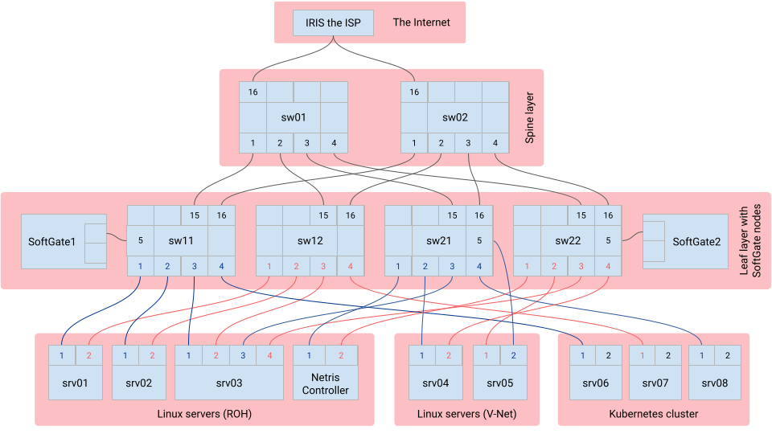

Welcome to Netris Sandbox
Netris Sandbox is a ready-to-use environment for testing Netris automatic NetOps. We have pre-created some example services for you, details of which can be found in the “Provided Example Configurations” document. Feel free to view, edit, delete, and create new services. In case of any questions, reach out to us on Slack.
The credentials for the sandbox have been provided to you by email in response to your Sandbox request.
The Sandbox environment includes:
Netris Controller: A cloud-hosted Netris Controller, loaded with examples.
Switching fabric: Two spine switches and four leaf switches, all operated by Netris.
SoftGates: Two SoftGate gateway nodes for border routing, L4 Load Balancing, site-to-site VPN, and NAT. Both operated by Netris.
Linux servers: Five Linux servers, with root access where you can run any applications for your tests.
Kubernetes cluster: A 3 node Kubernetes cluster, user integratable with Netris controller, feel free to deploy any applications for your tests.
ISP: Internet upstream with IRIS ISP, providing the sandbox Internet connectivity with real-world routable public IP addresses.
Topology diagram
{kind=link}
Netris Controller
Linux servers
- Example pre-configured Netris services:
srv01-nyc, srv02-nyc, srv03-nyc & Netris Controller - are consuming “ROH (Routing on the Host)” Netris example service, see Services → ROH.
srv01-nyc, srv02-nyc - are behind “Anycast L3 load balancer”, see Services → Load Balancer.
srv04-nyc, srv05-nyc - are consuming “V-NET (routed VXLAN)” Netris service, see Services → V-NET.
Accessing the Linux servers:
srv01-nyc: ssh demo@166.88.17.188 -p 30061
srv02-nyc: ssh demo@166.88.17.188 -p 30062
srv03-nyc: ssh demo@166.88.17.188 -p 30063
srv04-nyc: ssh demo@166.88.17.188 -p 30064
srv05-nyc: ssh demo@166.88.17.188 -p 30065
Kubernetes cluster
This Sandbox provides an up and running 3 node Kubernetes cluster. You can integrate it with the Netris Controller by installing the netris-operator. Step-by-step instructions are included in the “Learn Netris operations with Kubernetes” document.
Upstream ISP
This Sandbox also provides an upstream ISP service with real-world Internet routing configured through “BGP”. There are two pre-configured examples under NET → E-BGP , one using IPv4 and the other using IPv6, which are advertising the public IP subnets belonging to the sandbox to the upstream ISP IRIS.
ISP settings:
(pre-configured examples)
Name: iris-isp1-ipv4-example
BGP Router: Softage1
Switch Port: swp16@sw01-nyc
Neighbor AS: 65007
VLAN ID: 1041
Local Address: 45.38.161.74/30
Remote Address: 45.38.161.73/30
Prefix List Inbound: permit 0.0.0.0/0
Prefix List Outbound: permit 45.38.161.80/28 le 32
Name: iris-isp1-ipv6-example
BGP Router: Softage1
Switch Port: swp16@sw01-nyc
Neighbor AS: 65007
VLAN ID: 1041
Local Address: 2607:f358:11:ffc0::9/127
Remote Address: 2607:f358:11:ffc0::8/127
Prefix List Inbound: permit ::/0
Prefix List Outbound: permit 2607:f358:11:ffc4::/64
(configurable by you)
BGP Router: Softage2
Switch Port: swp16@sw02-nyc
Neighbor AS: 65007
VLAN ID: 1042
Local Address: 45.38.161.78/30
Remote Address: 45.38.161.77/30
Prefix List Inbound: permit 0.0.0.0/0
Prefix List Outbound: permit 45.38.161.80/28 le 32
Networks Used
Allocations and subnets defined under “IPAM”, see Net → IPAM.
| MANAGEMENT Allocation: 10.254.45.0/24
|___ MANAGEMENT Subnet: 10.254.45.0/24
| LOOPBACK Allocation: 10.254.46.0/24
|___ LOOPBACK Subnet: 10.254.46.0/24
| ROH Allocation: 192.168.44.0/24
|___ ROH Subnet: 192.168.44.0/24
| EXAMPLE Allocation: 192.168.45.0/24
|___ EXAMPLE Subnet: 192.168.45.0/24
| CUSTOMER Allocation: 192.168.46.0/24
|___ CUSTOMER Subnet: 192.168.46.0/24
| K8s Allocation: 192.168.110.0/24
|___ K8s Subnet: 192.168.110.0/24
| PUBLIC IPv4 Allocation: 45.38.161.80/28
|___ PUBLIC LOOPBACK Subnet: 45.38.161.80/30
|___ NAT Subnet: 45.38.161.84/30
|___ L3 LOAD BALANCER Subnet: 45.38.161.88/30
|___ L4 LOAD BALANCER Subnet: 45.38.161.92/30
| EXAMPLE IPv6 Allocation: 2607:f358:11:ffc4::/64
|___ EXAMPLE IPv6 Subnet: 2607:f358:11:ffc4::/64